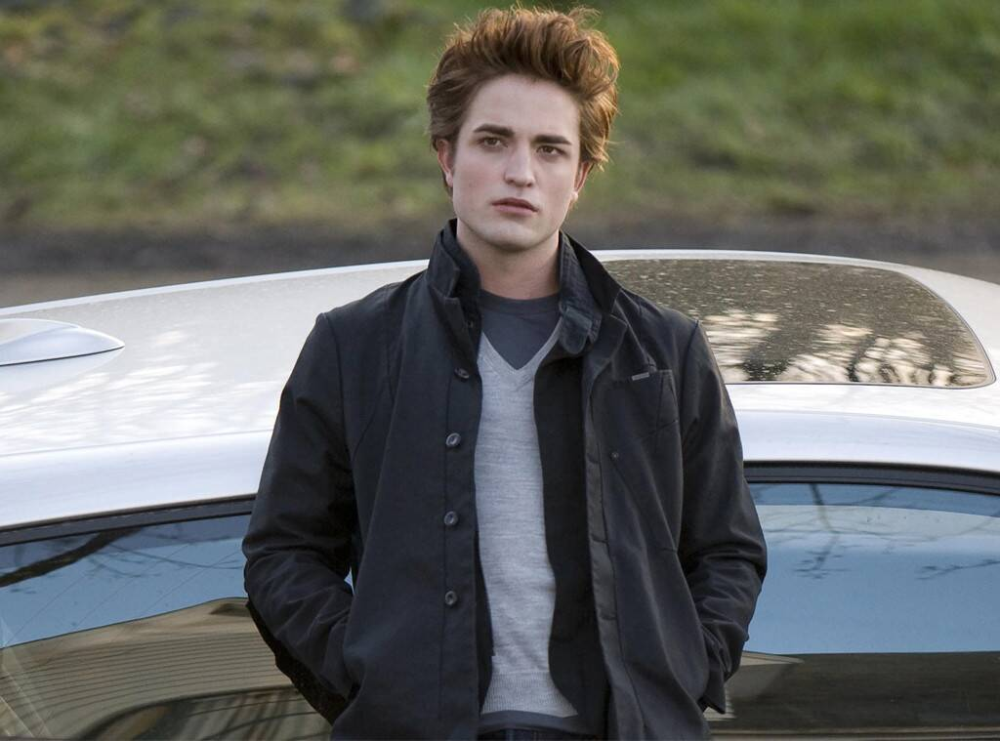
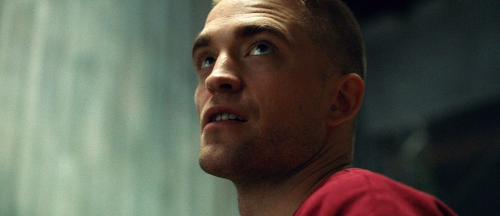
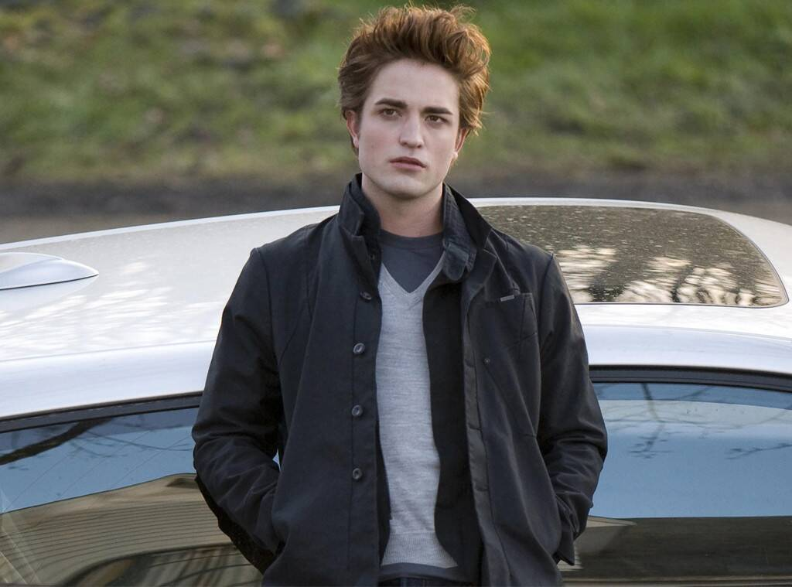
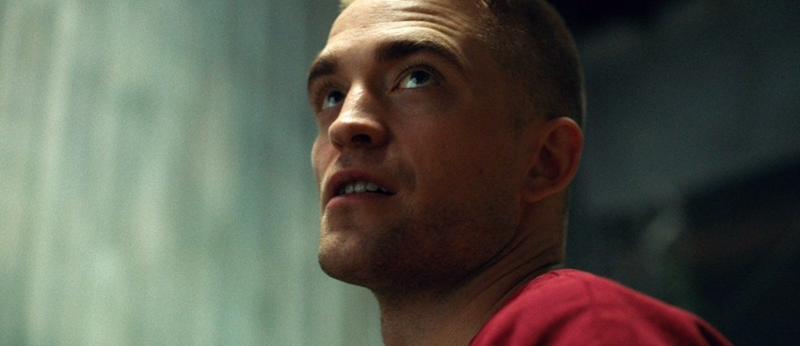

Ursula K. Le Guin's science fiction essay, "Vaster Than Empires and More Slow" reflects on the emotional mirroring pattern in relationships between human beings as well as humans and the earth. Osden, a human with heightened empathic capabilities, has lived his life assuming all humans are hateful, so reciprocates their negative affects. Upon encountering another planet, comprised of a dense network of sentient plants, Osden realizes that he is equally at fault for feeding into this closed circut of negative realtions. He succumbs to the planet, sacrificing himself to level out the discord the humans' presence caused the natural network.
I see this story as a commentary on how relationships are formed. It is an elaborate and eloquent iteration of the dictum "treat others how you want to be treated". Le Guin extrapolates this concept to relate to nature as well. Humans have abused planet earth for centuries, wreaking terror on the natural world. Now, our planet is responding. Global Warming is something we instigated for ourselves.
Super empathic capability. A space mission destined for failure, full of openly recognized unstable persons, and ridden with hyper-sexual escapades. Ursula K. Le Guin's "Vaster Than Empires and More Slow" contains elements of both Twilight and High Life, both of which star Robert Pattinson.
In Twilight, Robert Pattinson is a vampire with empathic capabilities. The only individual capable of stumping his empathic sense is Bella, his one true love. In Le Guin's essay, Osden, a human with empathic capabilities stemming from a procedure intended to "reverse autism", is only baffled by this planet's sentient plant network, which teaches him love for the first time.
In High Life, Robert Pattinson is one of many convicts sent on a space mission to see if they can successfully travel through a black hole. Like Osden's mission, Pattinson's is a certain failure. In addition, Pattinson and his fellow convicts are mandated participants in perverse scientific testing with the goal of producing a child in space. Pattinson's character in High Life, like Osden, is the subject of unethical, nonconsensual scientific testing. Due to the nature of the testing in High Life, Pattinson's cohort have all come in contact with one another sexually. Pattinson preserves himself, refusing to participate in the experiments; therefore not engaging sexually - neither naturally or artificially - with anyone else by his own volition. In "Vaster Than Empires and More Slow", Olleroo serves as the sexual conduit between all ship members, except Osden, who coils at human touch. Both Osden and Pattinson suffer violence that break their creeds of isolation.
What is going on here? What is the relationship between Robert Pattinson and Ursula K. Le Guin? Clearly, something is amiss, but all I can say for now is Robert Pattinson needs to star in the film version of Ursula K. Le Guin's "Vaster Than Empires and More Slow".
 


